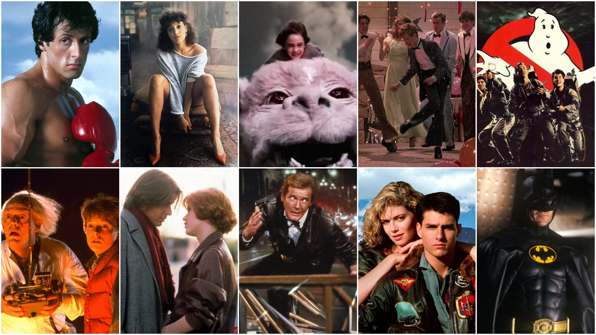

LA DECADA DE LOS 80
“E.T, “Terminator”, “Las aventuras de Indiana Jones”, “Volver al Futuro”, “Los Cazafantasmas, “Cuenta conmigo”, “Karate Kid” o “Pesadilla en lo profundo de la noche” fueron algunos de los filmes representativos de los 80. Era un cine de entretenimiento, en el que sobresalían los géneros de aventura, ciencia ficción y terror, pero con una mirada juvenil. De hecho, muchas películas de esos años fueron protagonizadas por niños o adolescentes. Steven Spielberg, Rob Reiner, James Cameron, John Hughes y Robert Zemeckis son algunos de los cineastas destacados de ese tipo de cine que supo convivir con producciones más artísticas, hoy consideradas joyas u obras maestras de todos los tiempos.
